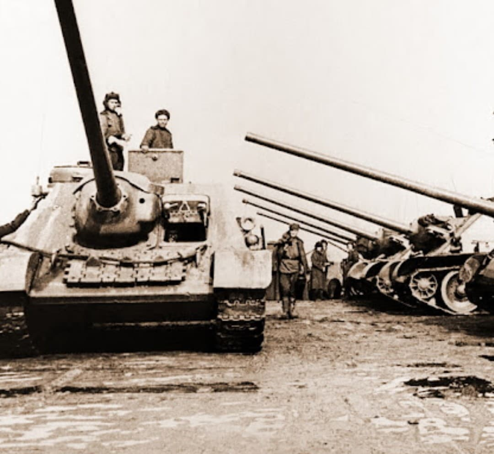
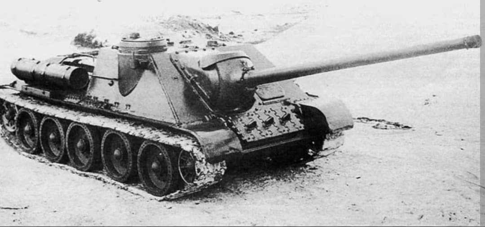
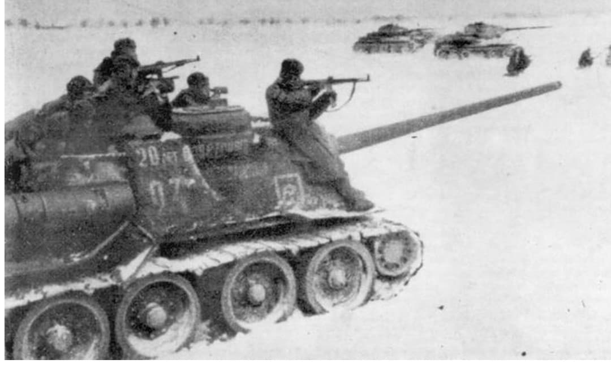

Le destructeur de blindés ultime de l'Armée rouge armé du redoutable canon de 100 mm D-10S

Le SU-100 (Samokhodnaya Ustanovka 100) est un chasseur de chars moyen développé par l'Union soviétique à la fin de l'année 1944. Évolution directe du SU-85, il a été conçu pour faire face au renforcement continuel du blindage des panzers allemands, notamment le Tiger II et le Panzer V Panther.
Considéré comme l'un des meilleurs chasseurs de chars de la Seconde Guerre mondiale, il combinait un profil bas, une excellente mobilité héritée du châssis du T-34 et une puissance de feu dévastatrice capable de perforer n'importe quel blindé lourd à grande distance.
Conçu au bureau d'études Uralmash sous la direction de L. I. Gorlitsky, le SU-100 réutilise le châssis et la transmission du char moyen T-34/85. Sa superstructure casematée est épaissie, poussant le blindage glacis frontal à **75 mm** d'acier incliné à 50°, et intégrant une coupole de commandant sur le côté droit pour améliorer la vision panoramique.
Son atout maître réside dans son canon de **100 mm D-10S**, dérivé d'une pièce d'artillerie navale. Ce canon propulsait des obus perforants à très haute vitesse initiale, capables de traverser jusqu'à 125 mm d'acier blindé incliné à une distance de 2 000 mètres, surpassant nettement les performances du canon de 85 mm.

Entré en service actif au début de l'année 1945, le SU-100 s'illustra de manière éclatante en mars 1945 lors de l'**Opération Frühlingserwachen** en Hongrie (autour du lac Balaton). Opposé à la dernière grande contre-offensive blindée allemande impliquant de nombreux Tiger II et Panther, le SU-100 démontra sa supériorité en détruisant de nombreux véhicules ennemis à longue portée.
Il participa activement aux ultimes opérations de la guerre, notamment l'offensive de Vienne et la **Bataille de Berlin**, où sa puissance de feu servait également à réduire au silence les positions fortifiées ennemies.

Produit à plus de **2 300 exemplaires** avant la fin des hostilités en Europe, le SU-100 continua d'être fabriqué en URSS et en Tchécoslovaquie jusqu'au milieu des années 1950.
D'une longévité remarquable, il fut exporté dans de nombreux pays du bloc de l'Est et du Moyen-Orient, participant à la crise du canal de Suez (1956), à la guerre des Six Jours (1967) et restant en service opérationnel dans certaines armées jusqu'à la fin du XXe siècle.
Page du Musée HOP WW2 – Section Véhicules Terrestres Soviétiques